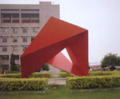

呂清夫 撰文

最近有不少人移民到加拿大、澳洲等地，據初步的統計，去年一年已有七萬人移民。這些移民中不乏國內事業有成的人，像公司老闆、大學教授都有，他們之所以寧願放棄目前安定的事業，奔走他鄉，另起爐灶，據稱主要是為著子女教、治安、交通等問題，而這些問題歸納起來，恐怕還是一個教育問題，因為教育有欠周全，所以德育不彰，有些人作奸犯科不以為意，有些人交通違規亦習以為常，這些人可以說都是教育得不夠使然。目前教育的最大癥結恐在於升學主義。最近政府雖有十二年國教的構想，但是成效還是令人存疑，一些基層的教師似乎不覺樂觀。因為目前的九年國教已經效果不彰，有些議員甚至大膽地把當前治安之亂歸罪於九年國教。照理說，在九年國教系統中，小學生應該是十分快樂的，可是事實未必如此。我們只要看看小學越區就讀的普遍，即可看出端倪，因為家長不管怎樣，內心還是籠罩在升學陰影之下，總想讓自己的小孩早一步起跑，以便制勝於他日，所以現代的孟母三遷比比皆是。而據學生告訴我，家教中心請家教的家長來自小學的竟然高達四成，可知問題的嚴重性。所以，將來即使實施十二年國教，昨日之國中生還是與今日的國小生一樣，照樣需要補習，尤其還要面臨高中的分發，其競爭之烈可以想見。在升學的壓力之下，學生在家真是四體不勤，五穀不分，回家好像回到旅館，飯來張口，茶來伸手，一般的做人道理都沒空去想，父母亦常緊張兮兮，於是親子關係常有摩擦，因為學生非升學之書不敢讀，非升學之事不敢做，偶有踰矩，即要受到家長的喝叱，有個朋友的小孩因考試不佳，母親還生氣地叫他去跳河，有的家長由於盯得小孩透不過氣，等到考上理想學校以後，小孩的精神竟失去了正常，因之，學生在家裡，除非他已升學無望，否則任何娛樂部可能受到家長的限制，摩擦對立於焉而生。至於在學校，由於萬事莫如升學急，所以學校所教往往越教越深，此即考試領導教學，不得不爾。據基層教師反映，目前國中教科書已經太深，只有精選的A段班還能適應，至於佔大多數的B段班，其面對教材，則往往有如鴨子聽雷，叫他們枯坐教室八個小時，實在有點不太人道，而問題學生往往就出在這上面。其實，不管A段B段的學生，在這種考試導向的教育下，實在很難對知識產生真正的興趣，即使A段班的學生，也可能習慣性的把唸書看成爭取目的的手段，造成人格上的不純。至於生活必備的常識他們則往往一竅不通。升學的陰影使學校的教育在零碎的知識中不暇終日，教師實在沒有時間，去悉心教導學生守法守紀的可貴，最多只是警告於前，懲罰於後而已。其間師生的摩擦並不亞於親子之間。近日報載台中二中學生侮辱師長、割腕自殺即是一例。不過如果有幸考上高中或編入A段班還好，雖然青春可能留白但是總有一線希望，只是他們為數不多，大約只有全學生的十分之三，其他的十分之七則要進入職校B段班，這些人往往生活懶散，問題叢生，但仍掩不住對於升學的嚮往。然則為什麼不能使人家統統升學呢?我們有悠久的科舉傳統，有重視文憑的積習，政府用人更唯文憑是尚，在這種文憑導向的社會中，人家自然要力爭上游，而升學無望對家長、對學生自是一種前途無「亮」的宣判。其引發的社會問題與不平是很自然的。所以，在目前的大學窄門之下，十二年國教與九年國教恐怕只是五十步與百步之差，據說教育當局已經宣稱，我們的大學人口到公元兩千年時，將增加到百分之三，我想這個步調太慢了，韓國現在的大學生人口就已經達到百分之三點六，我們這樣慢吞吞說得過去嗎？如果不能廣設大學，提高大學人口比例，那麼不管多少年國教的構想，都只是枝節之爭而已。只有廣設大學，打破升學主義，教育才能正常化，大家不會卡在升學的關卡以後，學生才能照興趣去吸收知識，照志願去唸大學（唸不起則屬個人之事），教師也才會有餘裕去教導學生生活的細節。這一來學校才是學生的天堂，學生才是天之驕子，知識變成他的樂趣，品德成為他的驕傲，這樣的青少年既不會困擾社會，治安、交通等問題亦可迎刃而解，但這一切的關鍵都在於廣設大學。